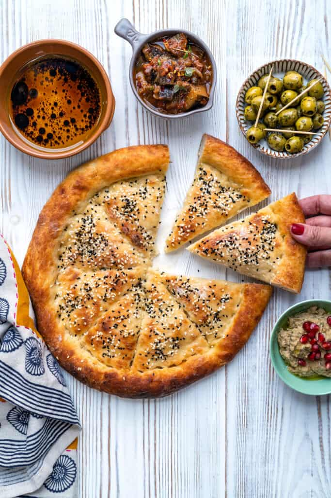

Homepage
Pita Bread

Description
Pita bread is people's favourite for ramadan! Try this recipe and share your pitas with friends and family.
Ingredients
- Bread flour
- Salt and sugar
- Rapid rise yeast (aka fast action yeast) – this dried yeast is mixed directly into the flour and doesn’t require activating first
- Plant milk – I used Pea Protein milk alternative which I recently got hooked on. It even froths up if you want to make a latte so I now always have some in my fridge!
- Olive oil
- Semolina (for the baking tray) or just flour
- Oat or soy cream for brushing
Steps
- In a large mixing bowl, combine the bread flour, salt, sugar, and rapid rise yeast.
- Slowly add the plant milk and olive oil while mixing to form a soft dough.
- Knead the dough on a floured surface for about 10 minutes until smooth and elastic.
- Place the dough in a lightly oiled bowl, cover with a damp cloth, and let it rise in a warm place for about 1 hour or until doubled in size.
- Punch down the dough and divide it into equal portions. Roll each portion into a round flat disc.
- Preheat the oven to 230°C (450°F) and place a baking tray inside to heat up.
- Dust the hot baking tray with semolina or flour and carefully place the pita rounds on it.
- Bake for about 5–7 minutes until they puff up and turn golden.
- Remove from the oven and brush with oat or soy cream for extra softness.
- Let cool slightly and enjoy your homemade pita bread!